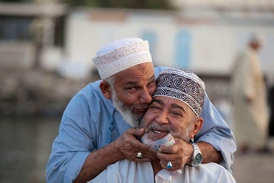

Sultanate of Oman
Oman: A Cultural Tapestry of Heritage and Innovation
What is Sultanat Oman?
The Sultanate of Oman, located in the south-west of the Arabian Peninsula, lies at a strategically important point of the Arabian Gulf. Oman is a rich and diverse country with a proud and patriotic people. Oman’s geography ranges from the rugged terrain of Ruus al Jibal in the north to the varied climate of Dhofar that, during the monsoon season, generates lush green vegetation.
Oman’s Geography?
Split into six distinct geographical regions, Oman stretches from the Straits of Hormuz in the north to a southern border with Yemen in the Dhofar Region. On its seaward side, the Sea of Oman and the Arabian Sea border Oman. Landward, Oman faces Saudi Arabia’s Empty Quarter. The climate is typically hot and dry; summer begins in April and lasts until October with temperatures reaching 53 degrees Celsius in Oman’s interior. The Dhofar region, however, receives heavier rainfall due to its monsoon season between June and September.
The Oman People
Oman embraces its diverse population and the people are characterised by their generosity of spirit, patriotism and devotion in everything that they do. Omani national dress is the Dishdasha, a simple, ankle-length, collarless gown with long sleeves worn with one of two forms of headdress, the Mussar or Kummah. Worn on formal occasions, the Khanjar, the traditional dagger of Oman, forms a central element of the emblem of the Royal Air Force of Oman.
